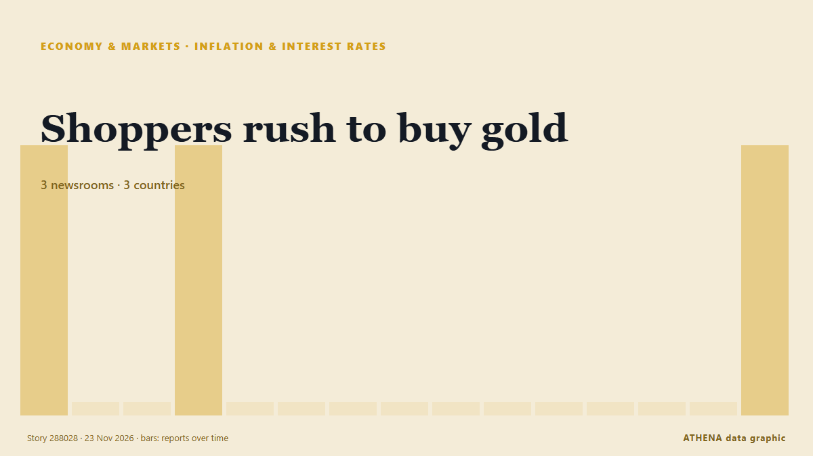

Οικονομία, Χρηματοοικονομικά & Αγορές
ΧορηγούμενοΠαρουσιάζεται από  Cybernetics and Artificial Intelligence Lab Welcome to the Cybernetics and Artificial Intelligence Laboratory, established at the Department of Business Administration of the National and Kapodistrian University of Athens. The lab is headed by Professor Dimitrios Thomakos. The lab aims to do research that can be published in top venues. Our research uses tools and methods of Artificial Intelligence, and lies in the following areas: - Forecasting - Decision making - Cyber security - Finance We are always looking forward to collaborating with exceptional students!
Cybernetics and Artificial Intelligence Lab Welcome to the Cybernetics and Artificial Intelligence Laboratory, established at the Department of Business Administration of the National and Kapodistrian University of Athens. The lab is headed by Professor Dimitrios Thomakos. The lab aims to do research that can be published in top venues. Our research uses tools and methods of Artificial Intelligence, and lies in the following areas: - Forecasting - Decision making - Cyber security - Finance We are always looking forward to collaborating with exceptional students!
Οι τίτλοι των ειδήσεων παρουσιάζονται στα αγγλικά, όπως δημοσιεύτηκαν.
Παρακολούθηση αγορών - επίσημα στοιχεία
Προς τα πού κινούνται τα επίσημα μεγέθη των αγορών - άνοδος, πτώση ή σταθερότητα - με την τελευταία επίσημη τιμή και την ημερομηνία της, και οι ειδήσεις αγορών που επιβεβαίωσε το ATHENA. Επίσημα στοιχεία, όχι τιμές σε πραγματικό χρόνο.
Ενέργεια
| 1 ημέρα | 1 εβδομάδα | 1 μήνας | Επίσημη τιμή | |
|---|---|---|---|---|
| Πετρέλαιο Brent | ▬ | ▲ | ▼ | $92,94/bblΕπίσημα στοιχεία της 17 Νοε 2026 |
| Πετρέλαιο WTI | ▲ | ▼ | ▼ | $89,53/bblΕπίσημα στοιχεία της 17 Νοε 2026 |
| Φυσικό αέριο ΗΠΑ (Henry Hub) | ▼ | ▲ | ▼ | $3,10/MMBtuΕπίσημα στοιχεία της 17 Νοε 2026 |
| Ευρωπαϊκό φυσικό αέριο (1 μήνας · 3 μήνες · 12 μήνες)(1Μ · 3Μ · 12Μ) | ▲ | ▲ | ▲ | $25,49/MMBtuΕπίσημα στοιχεία της 1 Σεπ 2026 |
| Άνθρακας (Αυστραλία) (1 μήνας · 3 μήνες · 12 μήνες)(1Μ · 3Μ · 12Μ) | ▲ | ▲ | ▲ | $153,84/tΕπίσημα στοιχεία της 1 Σεπ 2026 |
Τρόφιμα
| 1 μήνας | 3 μήνες | 12 μήνες | Επίσημη τιμή | |
|---|---|---|---|---|
| Σιτάρι | ▲ | ▲ | ▲ | $246,85/tΕπίσημα στοιχεία της 1 Σεπ 2026 |
Χρηματιστήρια ΗΠΑ
| 1 ημέρα | 1 εβδομάδα | 1 μήνας | Επίσημη τιμή | |
|---|---|---|---|---|
| S&P 500 | ▼ | ▼ | ▼ | Μόνο κατεύθυνση (δείκτης © Cboe)Επίσημα στοιχεία της 19 Νοε 2026 |
| Nasdaq Composite | ▼ | ▼ | ▼ | Μόνο κατεύθυνση (δείκτης © Cboe)Επίσημα στοιχεία της 19 Νοε 2026 |
Επιτόκια, κίνδυνος και δολάριο
| 1 ημέρα | 1 εβδομάδα | 1 μήνας | Επίσημη τιμή | |
|---|---|---|---|---|
| Απόδοση 10ετούς ομολόγου ΗΠΑ | ▼ | ▼ | ▼ | 5,04 %Επίσημα στοιχεία της 19 Νοε 2026 |
| Μεταβλητότητα αγοράς (VIX) | ▲ | ▲ | ▲ | Μόνο κατεύθυνση (δείκτης © Cboe)Επίσημα στοιχεία της 19 Νοε 2026 |
| Δολάριο ΗΠΑ, ευρύς δείκτης | ▬ | ▲ | ▲ | 122,65Επίσημα στοιχεία της 13 Νοε 2026 |
Το ευρώ έναντι άλλων νομισμάτων
| 1 ημέρα | 1 εβδομάδα | 1 μήνας | Επίσημη τιμή | |
|---|---|---|---|---|
| EUR/USD | ▬ | ▼ | ▼ | 1,0990 USDΕπίσημα στοιχεία της 20 Νοε 2026 |
| EUR/GBP | ▲ | ▲ | ▬ | 0,8374 GBPΕπίσημα στοιχεία της 20 Νοε 2026 |
| EUR/CHF | ▼ | ▼ | ▲ | 0,9223 CHFΕπίσημα στοιχεία της 20 Νοε 2026 |
| EUR/JPY | ▼ | ▼ | ▼ | 174,35 JPYΕπίσημα στοιχεία της 20 Νοε 2026 |
| EUR/CNY | ▲ | ▼ | ▼ | 7,3388 CNYΕπίσημα στοιχεία της 20 Νοε 2026 |
| EUR/TRY | ▲ | ▼ | ▬ | 55,579 TRYΕπίσημα στοιχεία της 20 Νοε 2026 |
| EUR/NOK | ▲ | ▲ | ▲ | 10,7180 NOKΕπίσημα στοιχεία της 20 Νοε 2026 |
Πηγές: Υπηρεσία Ενεργειακών Πληροφοριών ΗΠΑ (πετρέλαιο, φυσικό αέριο ΗΠΑ), ΔΝΤ (ευρωπαϊκό φυσικό αέριο, άνθρακας, σιτάρι), Υπουργείο Οικονομικών και Federal Reserve των ΗΠΑ (απόδοση 10ετούς, δείκτης δολαρίου) και Cboe (VIX), S&P Dow Jones Indices (S&P 500), Nasdaq (Nasdaq Composite), μέσω FRED (Federal Reserve Bank of St. Louis)· ισοτιμίες αναφοράς του ευρώ © Ευρωπαϊκή Κεντρική Τράπεζα. Οι τιμές είναι οι τελευταίες επίσημες, με την ημερομηνία τους - όχι τιμές σε πραγματικό χρόνο. Τις κατευθύνσεις τις υπολογίζει το ATHENA.
Κρυπτονομίσματα, ETF και μετοχές στις ειδήσεις
- CrowdStrike agrees to buy Zscaler for $43.9bn in an all-stock deal Κίνδυνος 0.0 23 Νοε
- 48.7: Australia’s S&P Global Manufacturing PMI eases in November Κίνδυνος 0.0 23 Νοε
- South Korea vows to stabilise stock market after KOSPI drops 5% Κίνδυνος 3.6 23 Νοε
- United Kingdom flash S&P Global Services PMI unexpectedly drops to 52.0 in November Κίνδυνος 1.3 23 Νοε
- Sheikh Hamdan shares Dubai Run aerial footage as more than 310,000 runners take over Sheikh Zayed Road Κίνδυνος 0.0 23 Νοε
- PSX: stocks surge, KSE-100 up nearly 1,200 points Κίνδυνος 0.7 23 Νοε
- Stock markets decline in early trade amid global sell-off, profit taking after two-day rally Κίνδυνος 3.9 23 Νοε
- ECOWAS Monetary Union: Cardoso advocates equity, fairness in governance structure Κίνδυνος 0.0 23 Νοε
- Anthropic’s Record IPO Raises Hopes for a Charitable Windfall That Has Nonprofits Preparing to Scale Κίνδυνος 0.0 23 Νοε
- Hojgaard shares PGA Tour lead as RSM Classic dragged into Monday finish Κίνδυνος 0.0 22 Νοε

Πληθωρισμός & επιτόκιαShoppers rush to buy gold
Sharp price drop drives demand for jewellery and gold bars. από News of Bahrain
| 10 Νοε | 131 |
|---|---|
| 11 Νοε | 129 |
| 12 Νοε | 113 |
| 13 Νοε | 71 |
| 14 Νοε | 39 |
| 15 Νοε | 64 |
| 16 Νοε | 127 |
| 17 Νοε | 101 |
| 18 Νοε | 104 |
| 19 Νοε | 108 |
| 20 Νοε | 76 |
| 21 Νοε | 35 |
| 22 Νοε | 37 |
| 23 Νοε | 29 |
Trump to welcome investors at gala for his plunging meme coin
President Donald Trump will host a gala for investors of the $TRUMP meme coin, which has seen its value plummet from approximately $75 to under $1 in 20 months. από Arab News
Winter scam: Abu Dhabi Police warn of fake bike, campsite rental offers
Abu Dhabi Police have issued a warning about fake online adverts targeting people looking to rent motorcycles, or book stays at traditional desert houses. από The National
Moody’s revises Hungary’s rating outlook to stable
Moody’s affirmed Hungary’s sovereign rating at Baa2 while revising the outlook from negative to stable. από FXStreet
Sri Lankans spend Rs. 560Mn daily on alcohol
Alcohol-dependent individuals in Sri Lanka collectively spend around Rs. από Daily Mirror
Infected TV boxes in BADBOX 3.0 rent out their owners’ home internet
HUMAN’s Satori Threat Intelligence and Research Team has disrupted BADBOX 3.0, an operation run mainly from infected low-cost TV boxes that generated roughly 40 billion ad bid requests a day at its… από Help Net Security
Art Basel Hong Kong Lines Up 232 Exhibitors and a New Floor Plan for Its 2027 Edition
The fair will also feature 31 first-time exhibitors. από ARTnews
Israeli attacks on medics in occupied West Bank surge by 350%: Rights group
Physicians for Human Rights Israel says medics face 'dangerous escalation' in violence from soldiers and settlers. από Al Jazeera English
‘No use pretending otherwise’: Chalmers warns of tough year ahead as jobless and inflation forecasts worsen
Jim Chalmers is warning of a year “full of risks”, saying unemployment and inflation will be higher and economic growth slower. από Sydney Morning Herald
Oil prices exceed $92 on global commodity markets
Retail fuel prices in Cambodia fell again yesterday following a decline in international oil markets, according to the Ministry of Commerce. από Khmer Times
Investors flip the switch on the AI trade
After tech stocks tumbled, are markets entering a new era? από Financial Times - Markets
SK Hynix to become Kioxia's top shareholder with bond conversion
Korean chip giant SK hynix Inc. is considering converting convertible bonds (CBs) linked to its investment in Kioxia Corp., a Japanese NAND flash memory maker, into shares, industry sources said… από The Korea Times
How ‘GTA VI’ surpassed all expectations
You can paint your bedroom walls. You can scuba dive and explore shipwrecks. από Bangkok Post
Retail sales volumes jump 2.2%, biggest rise since December 2021
September quarter retail sales have surprised on the upside. από New Zealand Herald
Constitution may be amended to permanently ban AL if needed: Shahe Alam
The state minister says the government and opposition could reach a consensus on constitutional changes, while ruling out the party's return to politics. από The Business Standard (Bangladesh) (working feed)
Beyond Degrees: Skills Take Centre Stage in Hiring
Employers are increasingly prioritising practical experience, proven abilities and professional skills alongside traditional academic qualifications. από News of Bahrain
EU leaders’ chair proposes new cuts to EU 2028-2034 budget draft, suggests digital tax
BRUSSELS, Nov 21 - The chairman of European Union leaders proposed further cuts to the European Commission's draft EU 2028-2034 budget on Saturday and suggested new revenue streams for the EU… από The Straits Times
PM Modi Credits People For Fall In Gold Prices, Links It To His May Appeal
PM Modi had appealed to the nation to avoid buying gold in May, when India's foreign exchange came under pressure with the Middle East conflict pushing up crude prices. από NDTV
US to welcome international co-productions once tax credit in place, says Trump advisor
Paul says Qatar should be first on the list of countries to co-produce with the US. από Screen Daily
Malaysia set to hold rates on strong growth, signal hike in 2027
Inflation in Malaysia remain moderate, despite a surge in global oil prices. από The Business Times
Binance resumes withdrawals after $6bn crypto hack
An on-chain tally puts the suspected Binance drain at $5.57 billion across three blockchains, as Tether and Circle froze $1.8 billion. από Decrypt
McKinney earns England Test call up for South Africa series
England have added Ben McKinney to their Test squad touring South Africa next month, with the uncapped Durham opener serving as a replacement for the injured Jacob Bethell. από Sky Sports
Croatia among EU countries where people are least likely to travel by plane
November the 22nd, 2026 – Snow is set to fall in Croatia next week, but there are areas far more likely than others to turn into a winter wonderland. από Total Croatia News
US visa holders are fed up and leaving tech jobs
Uncertainty over H-1B rules and permanent residency is prompting some highly skilled Indian professionals to consider leaving the US, despite strong jobs and career prospects in its technology sector. από Business Standard
Bitcoin rises after falling to two-year low
BENGALURU: Bitcoin, the world’s largest cryptocurrency by market value, rose more than 8 percent to around USD 59,952 on Saturday, after sliding to its lowest level in two years earlier in the day. από Business Recorder
Islam forecast to exceed Christianity as world's biggest religion by middle of next decade
Islam is expected to surpass Christianity as the world’s biggest religion by the middle of the next decade, the Pew Research Centre projected on Wednesday. από Dawn
EU Proposes Tax on Big Tech to Boost Budget
EU nations clash over 2028-34 budget, with Germany pushing for cuts to the proposed €2 trillion plan. από Express Tribune
Athens’ Ermou Street Keeps Its Place Among World’s Priciest
Athens’ Ermou Street ranks 15th among the world’s priciest retail streets for a second year, as prime rents rise 2% to €3,780 per sq m a year. από to vima
UK braced as temperatures could drop to minus 10C in coldest night of autumn
Freezing fog could make for difficult driving conditions on Saturday. από Evening Standard (London)
Boeing Weighs More Layoffs As 737 MAX Output Boost Slows
The company is struggling to lift output to its target monthly number. από Simple Flying
Palestinian authorities say man shot dead by West Bank settler guards
RAMALLAH, Palestinian Territories: Palestinian authorities said a man was shot dead by security guards from an Israeli settlement in the central occupied West Bank on Friday, while another was… από Arab News
Bitcoin rises over 2% to more than $60,000
Bitcoin, the world's largest cryptocurrency by market value, was up by around 2.14 per cent at $60,192.07 at 10:16 am ET (1516 GMT) on Saturday. από Deccan Herald
Anthropic IPO turns more than 5,000 employees into millionaires
More than 5,000 employees of US-based Anthropic have become millionaires through the value of their shareholdings following the company's stock market debut on Nasdaq. από AzerNews
Costa revives EU digital tax proposal in bid to reach agreement on budget
Latest seven-year plan for the bloc scales back spending but would still be an increase of about a quarter on current levels. από Luxembourg Times